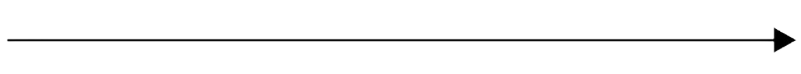

Our goal is to make technology accessible for innovative SMEs dreaming up a better, healthier world. We're here to sort through your problems and to replace with minimal, clean technology.
Featured Service
Business Assessment & Analytics
A fancier activity than a boring "company audit". We come spend some time in your workspace, map all of your activities in what we like to call a "megamap". We then find patterns in your business activities, as well as through your company data (we use the magic of programming), in order to decide where and how you can optimise, change and update in order to support your business goals.
See all of our services

We're a small, driven team that that believes that together we can reshape our challenging world. We focus on working with companies that make things- small series, custom, crafty objects; business owners that want to create authentic, healthy, ethical products. And for that, we know there aren't many solutions to make the life of small and medium companies easier. Our goal is to make advanced technology accessible, easy to understand and to work with- and ultimately, to enable you to do more good.
Read more about us
Find out all the lastest things that happened in and around our company + the next events we're organising.